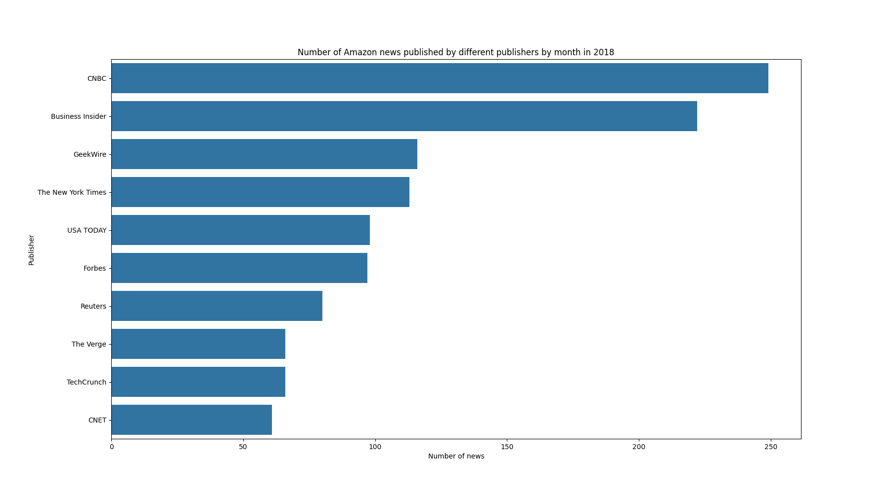
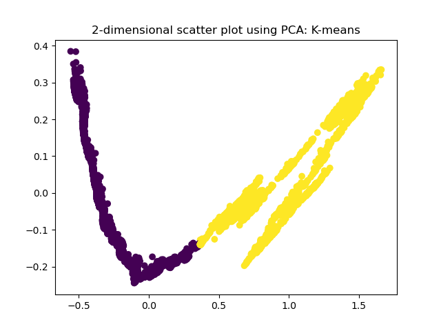

Analyses
Descriptive Analysis - Economy
Basic Statistical Analysis
In our three datasets, there are a total of 17 attributes. However, most of the attributes are not suitable for basic statistical analysis. Therefore, in this section, we only conducted 6 attributes’ basic statistical analysis due to our data type limitation, and we will use other ways to analyze our data.
Additionally, due to the nature of our data for basic statistical analysis (stock prices and trading volume), it is not particularly useful to analyze individual stock symbols' mean, mode, median, and standard deviation on their own. This is because these statistics need to be complemented with a time variable. Even when we divide the time range into stable periods, upward trends, and downturns, calculating various price statistics like mean, mode, median, and standard deviation is not highly informative.
Since the data we currently possess pertains to the overall stock price movements of each company, our analysis remains at a general level. By checking the price movements alone, we cannot find the potential causes but only discern trends. Therefore, our approach here just involved a simple comparison of Amazon with the other 4 companies across open price, highest price, lowest price, close price, adjusted close price, and volume. Overall, basic statistical analysis alone is not well-suited for comprehensively analyzing stock price fluctuations and economic performance. To derive more comprehensive conclusions, it needs to be complemented with additional analytical methods.
Amazon's Revenue Distribution (Q2 2023 10-K):According to Amazon's Q2 2023 10-Q (quarterly financial report), the revenue distribution across its various business segments is as follows:
- Online Stores (39.8%)
- Third-party Seller Services (23.7%)
- AWS (16.6%)
- Advertising Services (7.7%)
- Subscription Services (7.5%, Amazon Prime Video)
- Physical Stores (3.8%, including Whole Foods Market)
- Other (0.9%)
We will use this information to compare Amazon’s basic stock statistics (economic performance) with the other 4 companies. Amazon was founded in 1994, and its stock listed in 1997. As Amazon's primary source of net sales comes from online stores (online shopping), in our analysis, we will mainly focus on eBay, which has the most similarity to Amazon's online shopping company nature.
Amazon (AMZN):
As online shopping companies, Amazon’s mean prices (open price, highest price, lowest price, close price, adj close price) and the trading volumes were higher than eBay’s (founded in 1995/stock listed in 1998). Although the mode and median of eBay's stock prices were higher than Amazon's, Amazon's maximum prices were significantly higher than eBay's, and Amazon's standard deviation of prices was also much larger than eBay's. This indicates that Amazon's stock price showed greater volatility compared to eBay. From this analysis, we could potentially infer that in recent years, Amazon's overall performance was better than eBay's in the eyes of investors. Consequently, investors were more willing to invest in Amazon's stock, which led to higher mean stock prices, greater price volatility (in the earlier stage of stock listing, Amazon’s stock prices were lower than eBay), and significantly higher stock trading volumes than eBay.
eBay (EBAY):Netflix (NFLX):
As media-streaming and video-rental companies (Prime video/launched in 2006), although Amazon had a higher stock trading volume compared to Netflix, this might be attributed to the fact that investors have more confidence in Amazon's online shopping segment and AWS, rather than its media-streaming and video-rental segment. This can be inferred from the statistical analysis of both companies' stock prices (mean, mode, median, maximum, and standard deviation). In all these aspects, Netflix significantly outperforms Amazon. Netflix had higher mean, mode, and maximum stock prices. Furthermore, Netflix also had a larger standard deviation of stock prices (Netflix's initial listing price was already higher than Amazon's, and the substantial increase in its stock price resulted in a much larger standard deviation compared to Amazon). Hence, in the media-streaming and video-rental segment, we could infer that investors have more faith in Netflix, and so far, Netflix's economic performance was better than Amazon.
Target (TGT):

Walmart (WMT):
Amazon acquired Whole Foods Market, a grocery company, in August 2017. Although Amazon now also has a grocery segment, net sales from physical stores, including Whole Foods Market, accounts for only about 3.8% of its total net sales, which is relatively low. In contrast, both Target and Walmart primarily belong to the Wholesale Retail Industry, with a significant portion of their revenue coming from the grocery segment and food & beverage sales. (2023Q2: Target derived 23% of its revenue from this segment, and Walmart derived 60%) However, our current dataset (including stock prices and trading volume) cannot differentiate between the individual operating segments of these companies. Therefore, we cannot precisely determine Amazon's revenue contribution from its grocery segment. When investors assess Amazon's stock prices and economic performance, they typically focus on factors other than the performance of its Whole Foods operation. As a result, while we compared Amazon with Target and Walmart, this portion of the basic statistical analysis is provided for reference but may not hold strong statistical significance. Based on overall stock performance among the grocery companies (Target, Walmart, and Amazon Whole Foods), Target had the best performance. Despite having the lowest mean trading volume among the three, Target's stock prices (mean, median, and maximum) were the highest. Additionally, Target had the highest initial listing price, and it also had the largest standard deviation, indicating the highest price volatility. This suggests that investors have the most confidence in Target.
Outlier Detection
In this section, we tried to estimate Close price’s outliers. We decided to use Local Outlier Factor (LOF) to detect outliers. A point will be considered as an outlier if it is at a small distance to the extremely dense cluster. The global approaches may not consider that point as an outlier. But the LOF can effectively identify the local outliers, so we chose this method for detecting outliers. We tested 3 different neighborhood sizes (k) for each company: 2, 10, and 20. In our Python code, we first used the LocalOutlierFactor(n_neighbors=k) function and its associated attributes to get potential outlier predictions and scores. Then, we set a threshold for identifying outliers. Specifically, we decided to set the threshold at the 0.1 percentile (0.001 quantile) of the outlier scores. Any data point with a score below this threshold was considered an outlier, since a lower LOF score means more isolated and a higher possibility of being an outlier.
For each company, after conducting outlier detection, we found that as k value (neighborhood size) increases, the results become less sensitive to outliers. As k increases, LOF algorithm calculates LOF scores for data based on a larger neighborhood size, and the data will need to be more similar to their neighbors, so that the data would be viewed as inliers. Hence, some data that were previously classified as inliers (in Case 1 or Case 2) may be reclassified as outliers as k increases. While we detected some outliers, we decided not to remove these outliers. This is because outliers in stock prices are also valuable for analyzing. They can represent some significant market events that might be interesting for investors. Hence, we decided to keep these data to ensure a comprehensive analysis and only displayed the results for Amazon, which is our primary focus.
Binning Strategy
Binning method can help to identify and handle outliers, and it can also help to identify and smooth the noisy data. However, since outliers in stock prices are also valuable for analyzing, we decided to keep outliers. Additionally, since the noisy data is too old for our analysis, we decided to directly filter out this noise (have done in the preprocessing step). Therefore, for the binning algorithm, we did not conduct the step to smooth data by bin mean or bin boundary.
We decided to analyze 1 attribute (closing price) and to use an equal-width partition, since we would like to know the distribution of the bin ranges of closing prices of each company for further analysis. We first computed the min and max values of each type of stock price, and then we calculated even spaced bins using min and max value. Next, we counted the number of values in each bin and created a new column (CloseGroups1) that groups data into bins. The results are shown in the following table. This method makes sense for our data. Here, we can analyze the stock price trends based on the bin ranges in which the stock price falls during different time periods. However, to truly understand the reasons behind these price movements, we need to consider significant events that occurred during those times. Using the bin method alone provides some understanding of historical stock price performance and the outlook of investors regarding the company's economic performance (positive or negative) at those times. However, for a more comprehensive analysis of the company's economic performance, we need to combine the results of the bin method with other statistical analysis, financial reports of the company, text analysis, and other relevant news and events. This approach will enable us to gain a deeper and more precise understanding of the company's economic performance.
Amazon (AMZN):
Based on the above results, we could find that in the early stages of Amazon's stock list (listed in 1997), its stock price was relatively low, so it remained in the first bin for a long period. As time went and reached 2015, the stock price entered the second bin. Subsequently, the stock price showed steady growth, entering the third bin in 2017. In 2018, the growth continued, with the stock price primarily falling into the fourth and fifth bins. In 2019, the stock price stabilized (maintaining in the fourth and fifth bins). In 2020, there was another period of continuous growth, pushing the stock price into the sixth to eighth bins. In 2021, the stock price remained at a high point, mainly falling into the seventh and eighth bins. When time went to 2022, the stock price began to gradually decline, fluctuating within the fourth to eighth bins during that year. Last, from 2023 up to September, it showed slight growth, mainly within the fourth to eighth bins. Overall, the period from 2017 to 2021 can be considered as the primary growth phase, while the stock price started to decline in 2022. These trends can be observed in the scatter plot. Additionally, we can also observe the overall distribution of bin ranges of Amazon over the years in the histogram.
eBay (EBAY):According to the above results, eBay's stock price has remained relatively low for a long period since its stock listed in 1998 (mainly falling into the first bin). Starting from 2003, there was a slight growth (stably falling in the second bin), followed by another slight growth in 2004 (entering the third bin). From 2005 to 2007, it stayed in the second bin, and in 2008, the stock price dropped to the first bin. From 2009 to the first three quarters of 2012, it mainly remained in the first and second bins. In 2012 Q4, it stably entered the third bin, and subsequently remained stable (third bins) until the second half of 2016. From 2017 to 2018, the stock price continued to grow (falling mainly in the fourth and fifth bins). Although there was a slight drop in 2018 Q4 (third bin), it continued to grow from 2019 to 2020 (mainly in fourth, fifth, and sixth bins). In 2021, the growth continued (mainly in sixth, seventh, and eighth bins). Starting from 2022 to 2023, it began to decline, gradually falling from eighth to fifth bins. Overall, the main growth period was from 2017 to 2021, and the decline started in 2022. The overall trend is similar to Amazon. We can observe these trends in the scatter plot. Additionally, we can also observe the overall distribution of bin ranges of eBay over the years in the histogram.
Netflix (NFLX):
According to the above results, Netflix’s stock price has remained relatively low for a long period since its stock listed in 2002 (mainly falling into the first bin). By the second quarter of 2015, there was a slight increase in the stock price (steadily entering the second bin), which remained stable (mainly in the first and second bins) until the second half of 2017 when the stock price experienced another slight increase (entering the third bin). In 2018, there was continued growth (mainly falling into the fourth and fifth bins), and it remained stable in 2019 (also in the fourth and fifth bins). The upward trend continued in 2020 (mainly in the fifth, sixth, and seventh bins), and in 2021 H1, the growth continued (starting to enter the eighth bin). In 2021 Q4, the stock price continued to rise significantly (stably falling into the seventh and eighth bins). However, starting from 2022, the stock price began to significantly decline (falling from the seventh bin to the third bin), until there was some relief in 2022 Q4 when the stock price began to rise again, reaching the fourth bin. Subsequently, in 2023, there was slight growth (mainly falling into the fourth, fifth, and sixth bins). Overall, the main growth period was from 2017 to 2021, and in 2022, there was a significant decline. The overall trend is also similar to Amazon’s. These trends can be observed in the scatter plot. Additionally, we can also observe the overall distribution of bin ranges of Netflix over the years in the histogram.
Target (TGT):
According to the above results, Target’s stock price has remained relatively low for a long period since its stock listed in 1983 (falling into the first bin). By 1999, the stock price began to show slight growth (entering the second bin), and it subsequently remained stable in the first and second bins. By 2013, the stock price rose again to enter the third bin. From 2014 to 2018, the stock price remained stable in the second and third bins. Starting from the second half of 2019, the stock price began to rise into the fourth bin, and in the second half of 2020, it continued to grow significantly (reaching the fifth and sixth bins). In 2021, the growth continued into the seventh and eighth bins. However, in 2022, the stock price started to decline (gradually falling from the eighth bin to the fifth bin), and in 2023, it continued to decline to the fourth bin. Overall, the period of stock price growth mainly occurred from 2019 to 2021, and from 2022, it has been gradually declining. We can observe these trends in the scatter plot. Additionally, we can also observe the overall distribution of bin ranges of Target over the years in the histogram.
Walmart (WMT):
According to the above results, Walmart, since its stock listed in 1972, has also not experienced explosive growth and remained at a low point for a long period (falling into the first bin). By 1997, it started to enter the second bin, and by the end of 1998, the stock price showed slight growth, entering the third bin. At the end of 1999, it experienced further growth, entering the fourth bin. From 2000 to 2011, the stock price remained stable (primarily in the third bin). From 2012 to 2013, it had slight growth, stabilizing in the fourth bin. At the end of 2014, it grew again, entering the fifth bin. However, in 2015, the stock price declined, falling from the fifth bin to the third bin. Starting in 2016, the stock price began to rise, eventually entering the sixth bin in 2018. In 2020, the stock price continued to rise, growing from the sixth bin to the eighth bin. In 2021, it remained stable (falling into the seventh and eighth bins). However, starting in 2022, the stock price began to decline, falling to the sixth bin. In early 2023 through Q3, it experienced slight growth again, entering the eighth bin. Overall, the primary period of stock price growth occurred from 2016 to 2021, with a slight decline in 2022. In 2023, Walmart’s stock price rose again, and it was the only company among the above five companies that maintained a high point in 2023. These trends can be observed in the scatter plot. Additionally, we can also observe the overall distribution of bin ranges of Walmart over the years in the histogram.
Below are 2016~2023 histograms of each company. In these histograms, the x-axis represents the different bins, and the y-axis means the bin counts. These histograms provide a visual representation of the distribution within each bin. Our particular focus lies on Amazon's epic year in 2017. To gain insights into its performance during that period, we have intentionally restricted the analysis to the timeframe of 2016~2023, and we focused on closing price.
Amazon (AMZN):
From the time Amazon listed in 1997 to 2023, its stock prices primarily fell into the first bin range (-0.93, 22.632]. However, when we limited our focus to the period from 2016 to 2023, the stock prices were concentrated mainly in the fourth bin range (69.758, 93.32], with a significant presence in the second (22.632, 46.195], fourth, and fifth (93.32, 116.883] bins. This concentration suggests that Amazon's stock prices showed significant growth during the years 2016 to 2023 compared to when it first listed. It indicates a positive outlook among investors regarding Amazon's economic performance.
eBay (EBAY):From the year eBay listed in 1998 to 2023, its stock prices were primarily distributed in the first and second bin ranges (-0.491, 9.769] and (9.769, 20.029]. However, when we limited our focus to the period from 2016 to 2023, the stock prices were concentrated mainly in the fourth bin range (30.289, 40.549], with a significant presence in the fourth and fifth bins. However, when we compared this with Amazon's performance from 2016 to 2023, Amazon's stock prices were more evenly distributed across bins 4 to 8, indicating a more stable performance compared to eBay. When combined with the previous statistical analysis, we can infer that Amazon's economic performance was better than eBay's between 2016 and 2023.
Netflix (NFLX):
From the year Netflix listed in 2002 to 2023, its stock prices were primarily distributed in the first bin ranges (-0.627, 86.038]. However, when we limited our focus to the period from 2016 to 2023, the stock prices were concentrated mainly in the second (86.038, 172.702], fourth (259.367, 346.031], and fifth (346.031, 432.696] bin range. When we compared this with Amazon's performance from 2016 to 2023, we noticed that the number of Netflix's stock prices in bins 6 to 8 was lower than Amazon's. However, the bin boundary numbers for Netflix were significantly higher than Amazon's, and the distribution of stock prices in bins 4 to 8 was not significantly different from Amazon's. When combined with the previous statistical analysis, we can infer that Netflix's economic performance was better than Amazon's between 2016 and 2023.
Target (TGT):
From the year Target listed in 1983 to 2023, its stock prices were primarily distributed in the first (1.125, 34.408] and second (34.408, 67.691] bin ranges. However, when we limited our focus to the period from 2016 to 2023, the stock prices were concentrated mainly in the third (67.691, 100.974] bin range. When we compared this with Amazon's performance from 2016 to 2023, Amazon's stock prices were more evenly distributed across bins 4 to 8, indicating a better performance on stock prices compared to Target. However, if we took into account the bin ranges' boundary numbers, Target's stock prices were higher than Amazon's. Therefore, based solely on the bin results, we cannot conclusively determine which of these two companies had better economic performance. Moreover, Amazon and Target have relatively different operational characteristics. In comparison to eBay, with the existing data and analytical methods, our analysis may not provide a meaningful comparison for comparing Amazon with Target here.
Walmart (WMT):
From the year Walmart listed in 1972 to 2023, its stock prices were primarily distributed in the first (-0.984, 19.92] bin ranges. However, when we limited our focus to the period from 2016 to 2023, the stock prices were relatively evenly distributed across bins 4 to 8. Like Target, in comparison to eBay, with the existing data and analytical methods, our analysis may not provide a meaningful comparison for comparing Amazon with Walmart. However, if we only compared Target and Walmart, taking into account the bin ranges' boundary numbers and the distribution quantities, we could infer that while Target's current stock prices were higher, and its current economic performance might still be better than Walmart, investors may be less optimistic about Target's future development. It's possible that Target had some impressive past performances, which led to higher stock prices, but in recent years, it hasn't shown outstanding results. This may explain why its stock price distribution was worse than Walmart's between 2016 and 2023.
Correlation Analysis
The following are the correlation results of each company between 2016 and 2023. According to our data, the results presented in the Date-Open Price, Date-Close Price, Date-High Price, and Date-Low Price scatterplots for Amazon and its competitors show little difference. Therefore, in this section, we only present the Correlation scatterplots for Date-Open Price for each company, omitting the other three due to layout constraints.
Amazon (AMZN):
According to Amazon's scatterplots of date and prices during 2016 to 2023, we could observe an overall upward trend in Amazon's stock prices. From the scatterplots of date and volume, it's obvious that from 2016 to 2023, the trading volume was highest in 2018, as it reached the highest point in the group of scatterplots.
Based on the scatterplots of open vs. close and high vs. low, we noticed that there wasn’t a significant difference between these two pairs, but the open vs. close pair had relatively larger gaps, making it more dispersed or thicker.
In the last scatterplot, the y-axis represents the difference between the previous day's 'Adj Close' and the current day's 'Open.' If this number is negative, it means that the stock price increased at the opening of the day, and if it's positive, it indicates a decrease in the opening stock price. Additionally, the further the scatterplot is from zero, the greater the increase or decrease in price, indicating more significant post-market events that led to such significant deviations. From this scatterplot, we could see that there were more occurrences of these abnormal events in 2022 to 2023, resulting in larger fluctuations in the deviation values.
eBay (EBAY):According to eBay's scatterplots of date and prices during 2016 to 2023, we could observe that eBay's stock prices also showed an upward trend. The stock price trading volume was higher in the years 2019 to 2020.
Based on the scatterplots of open vs. close and high vs. low, we noticed that there wasn't a significant difference between these two pairs, and the gap between open and close prices was relatively smaller compared to Amazon.
As for the 'CloseOpenDiff vs. Date scatterplot, besides the scattered points from 2021 to 2023, another observation was that eBay's values were mainly distributed around -2, while Amazon's values were mainly near 0. Therefore, we could infer that events occurring post-market between 2016 and 2023 had a more positive impact on eBay’s stock prices, since there was a higher probability of price increases at the opening of the following day.
Netflix (NFLX):
According to Netflix's scatterplots of date and prices during 2016 to 2023, we could observe that, on the whole, Netflix's stock prices also showed an upward trend, but there was a significant drop in 2022. The stock price trading volume was higher in 2016.

Based on the scatterplots of open vs. close and high vs. low, we could see that there wasn't a significant difference between these two pairs, but the gap between open and close prices was relatively larger than Amazon’s.
As for the 'CloseOpenDiff vs. Date scatterplot, we could observe that in 2022 and 2023, the points were more scattered, especially in 2022 when there were certain days after stock market closing that should have had some significant events, leading to a steep drop in the opening price (around 100) of the following day. While Netflix's values were mainly concentrated near 0, similar to Amazon, the difference of CloseOpenDiff for Netflix was much larger than Amazon’s. Therefore, we could infer that between 2016 and 2023, there was a higher probability of Netflix encountering significant events that negatively impacted its stock prices after market closing.
Target (TGT):
According to Target's scatterplots of date and prices during 2016 to 2023, we could observe that, on the whole, Target's stock prices experienced a significant drop in 2021 to 2023 and this trend might continue to decline. The stock price trading volume was relatively average compared to the other five companies.
Based on the scatterplots of open vs. close and high vs. low, we could see that there wasn't a significant difference between these two pairs, and it was not significantly different from Amazon.
As for the 'CloseOpenDiff vs. Date scatterplot, we could observe that in 2022 and 2023, the points were more scattered, especially on certain days in 2022 when there were significant events after stock market closing, resulting in a sharp drop in the opening price (around 20 and 40). However, since Target's values were mainly distributed around -10, while Amazon's values were concentrated near 0, we could infer that, except for those two days mentioned above, between 2016 and 2023, there were more events that had a positive impact on Target's stock prices after market closing, since the probability of the increase of opening price of the following day was higher.
Walmart (WMT):
According to Walmart's scatterplots of date and prices during 2016 to 2023, we could observe that, overall, Walmart's stock prices showed an upward trend and were slightly better than Target (as also seen in the previous histograms). The stock price trading volume was higher from 2016 to 2018.
Based on the scatterplots of open vs. close and high vs. low, we could see that there wasn't a significant difference between these two pairs, and it was not significantly different from Amazon.
As for the 'CloseOpenDiff vs. Date scatterplot, we could observe that from 2016 to 2023, Walmart's values increased from -10 to 0 (the most significant change among the five companies). Therefore, we could infer that between 2016 and 2023, there have been fewer significant events affecting Walmart's stock prices after market closing, while more detailed data was needed to assess whether this development is positive or negative.
Descriptive Analysis - News
Number of Amazon News Released by Year and by Month
Number of Amazon news released per year
Description: News release volume was lowest in 2016. In 2017, the number of news items increased rapidly, and a similar trend continued in 2018. Notably, 2017 marked an epic year for Amazon's growth. From 2016 to 2017 and 2017 to 2018, there was steady growth, with 2017 being a pivotal year. The news volume remained stable but slightly decreased from 2018 to 2019.
Insights: Media attention reflects Amazon’s market performance. Lower news volume in 2016 suggests fewer major events. Outstanding growth in 2017 indicates effective strategies, marking it an epic year. The stable news volume from 2018 to 2019 may imply market saturation or a shift to stability.
Correlation: Combine Number of Amazon news released by year (2016-2019) and Frequency of keyword appeared in Amazon news by month (2016, 2017, 2018, 2019). In 2016, top keywords were geekwire and business insider, shifting to CNBC, business insider, and geekwire in 2017, reflecting Amazon’s strategy change.
Number of Amazon news released by month in 2016
Description: The number was highest in January 2016, followed by a downward and then stable trend. Monthly news releases were consistently around 200.
Insights: Amazon’s 2016 performance was suboptimal, with no favorable market measures after January.
Number of Amazon news released by month in 2017
Description: The overall trend increased from the first half to the second half of the year. Monthly news count was generally above 300, with notable peaks in June, August, October, and December. Compared to 2016, there was a significant increase in news releases in 2017.
Insights: Amazon adopted effective strategies in 2017, with a notable increase in media performance after June. Actions like market acquisitions and technological innovation contributed to the growth.
Number of Amazon news released by month in 2018
Description: No obvious trend change, with stable overall performance. Monthly news releases reached around 400, and there was a significant increase compared to the same months in 2017.
Insights: 2018 saw substantial growth early in the year, indicating the effectiveness of strategies adopted in 2017. Continued growth each month compared to 2017 signifies ongoing effective strategies.
Number of Amazon news released by month in 2019
Description: Monthly news releases remained stable at 400, slightly less than in 2018.
Insights: Amazon may have entered a development bottleneck in 2019, resulting in less outstanding market performance and reduced media attention.
Number of Amazon news published by different publishers by year (2016-2019)
Description: Top 3 publishers are Business Insider, CNBC, GeekWire. Business Insider focuses on business news, CNBC on financial news, and GeekWire on technology news.
Insights: Amazon's news coverage mainly focuses on business and technology, especially the technology field. GeekWire, a niche technology news site, ranks among the top three, indicating Amazon’s remarkable performance in technology.
Number of Amazon news published by different publishers by month in 2016
Description: Among these 10 publishers, the Top 2 were GeekWire and Business Insider. GeekWire published nearly 200 news, indicating a strong focus on technology.
Insights: GeekWire's overwhelming lead suggests Amazon's 2016 development strategy focused on technology, possibly laying the foundation for the outstanding performance in 2017.
Number of Amazon news published by different publishers by month in 2017
Description: The top three are CNBC, Business Insider, and GeekWire. GeekWire's ranking among the top three has decreased compared to 2016.
Insights: Amazon's focus on business news in 2017 may indicate a shift in market development, possibly through acquisitions. The joint effect of market strategy and technological development led to the epic year.
Number of Amazon news published by different publishers by month in 2018
Description: Top 3 are CNBC, Business Insider, GeekWire.
Insights: The unexpected decline in GeekWire's news releases suggests a shift in Amazon's positioning since 2017, focusing more on market development. Economic media attention is growing rapidly.
Number of Amazon news published by different publishers by month in 2019
Description: Trends in 2019 are generally similar to 2018, with business and economic news dominating. GeekWire falls to 9th place.
Insights: In 2019, Amazon continued to focus on market strategy, with the long-tail effect from 2017 still impacting.
Frequency of Keyword Appeared in Amazon News by Month
Frequency of keyword appeared in Amazon news by month in 2016
Description: Top 5 keywords in 2016 are {new-329, business-208, geekwire-196, prime-173, news-166}.
Frequency of keyword appeared in Amazon news by month in 2017
Description: Top 5 keywords in 2017 are {new-452, business-288, prime-229, news-223, cnbc-190}.
Insights: The comparison between 2016 and 2017 reveals increased mentions of "new," indicating more activity in 2017 regarding new products, features, or events. Increased mentions of "prime" and "business" align with the focus on market strategies. "Alexa" and "echo" gained attention, possibly due to updates or increased popularity. The appearance of "foods" is likely linked to Amazon's acquisition of Whole Foods. "Google" entering the top 20 suggests a noticeable presence in competition or cooperation in 2017.
Frequency of keyword appeared in Amazon news by month in 2018
Description: Top 5 keywords in 2018 are {new-552, business-396, prime-292, news-337, cnbc-250}. Mentions of “business” increased significantly, showcasing Amazon’s focus on business development. "Alexa" gained more attention, indicating increased popularity or technological updates in 2018.
Frequency of keyword appeared in Amazon news by month in 2019
Description: Top 5 keywords in 2019 are {new-466, business-449, news-361, prime-347, insider-337}. "News" and "prime" continued to grow in 2019, while mentions of "cnbc" fell, indicating a possible bottleneck period in Amazon's development.
Insights: The downward trend in 2019 suggests a bottleneck period after rapid development in 2018 and 2017.
Cluster Analysis
Clustering can provide insights into market behavior and dynamics. We can use the results to better understand how Amazon's stock price is influenced by macroeconomic factors or industry trends. We experimented with different values for the parameter 'k' by testing five different values to generate clusters. To evaluate the quality of these clusters, we applied the Silhouette procedures. The table below presents the results:
| k | K-MEANS | Ward | DBSCAN | GMM |
|---|---|---|---|---|
| 2 | 0.724 | 0.725 | -0.461 | 0.647 |
| 3 | 0.580 | 0.550 | -0.461 | 0.573 |
| 4 | 0.592 | 0.561 | -0.461 | 0.541 |
| 5 | 0.583 | 0.539 | -0.461 | 0.509 |
| 6 | 0.585 | 0.539 | -0.461 | 0.357 |
We have obtained four sets of cluster results using each of the methods, and we visualize these clusters through a PCA projection.

We conducted insights for the clustering work on Amazon stock price after 2017:
Two Distinct TrendsThe consistently high Silhouette scores for K-Means and hierarchical clustering when dividing the data into two clusters indicate that there are two distinct trends or patterns in the Amazon stock data. These trends might correspond to different market conditions, investor sentiments, or external factors affecting Amazon's stock.
Bullish and Bearish PhasesIt's possible that the two clusters represent bullish and bearish phases of Amazon's stock. One cluster may capture periods of positive performance and growth, while the other cluster might represent downturns or corrections. Understanding these phases can aid investors in making informed decisions.
GMM ConfirmationThe Gaussian Mixture Model (GMM) also supports the idea of two underlying patterns, as it achieves a high Silhouette score when k is set to 2. This reaffirms the presence of two significant clusters within the data.
DBSCAN IneffectivenessThe negative Silhouette scores for DBSCAN across all k values suggest that DBSCAN is not suitable for clustering this dataset. This could be due to the time-dependent nature of stock prices, making it challenging for DBSCAN to identify meaningful clusters.
Overall ConclusionOverall, through the cluster results, we have reached a conclusion that Amazon's stock price after 2017 exhibits two trends: either an upward or a downward trend. By comparing with the earlier conclusion from the Descriptive Analysis-Economy's Binning Strategy, which states "Overall, the period from 2017 to 2021 can be considered as the primary growth phase, while the stock price started to decline in 2022", we can doubly confirm that indeed, the stock price trend of Amazon after 2017 has two directions, corresponding to the cluster results.
Sentiment Analysis
Overview
We want to obtain the sentiment of Amazon news, and then use this to infer Amazon's public image, and combine keywords and changes in sentiment within the same time period to infer whether certain measures taken by Amazon cater to the public or the market. For example, the changes in the proportion of positive sentiment in Amazon news around 2017 can be inferred from the image performance of the 2017 epic year.
Build Models
- Convert to lowercase: Converting to lowercase avoids duplication due to different cases.
- Word tokenize: Text is usually composed of continuous characters, such as sentences or paragraphs. To extract meaningful information from these texts or perform specific text tasks (such as sentiment analysis), we first need to split these continuous characters into smaller, meaningful units. Understand the sentiment of a document by counting word frequencies.
- Filter out certain words (or tokens): Removing words that are common in the text but do not carry actual meaning can reduce data noise and improve the efficiency of subsequent analysis.
- Converts each value in the title column to lowercase and breaks it into words and tokens.
- Filter out certain words (or tokens) from the given tokens.
- Calculate sentiment scores for each headline using VADER's polarity_scores method and store the scores in the compound column. Classify sentiment as "positive", "neutral" or "negative" based on compound value.
- Calculate the sentiment score for each title using AFINN's score method and store the score in the afinn_score column. Classify sentiment as "positive", "neutral" or "negative" based on the afinn_score value.
Test Model
1. One is to combine the results of two volunteers and the results of AI, and according to the feedback, the analysts (that is, us) manually unify them according to their feedback, and then this result is consistent with VADER Compare with the results of the AFINN method to get the accuracy.
2. One is to directly compare the results of AI with the results of VADER and AFINN methods to obtain the accuracy. The purpose of this method is to eliminate human tendencies as much as possible. But based on the results, the combined results are almost the same as looking at the AI results alone.
Test Results:
However, because personal emotions are too obvious in the two steps of manual labeling and manual unification, the results obtained are not very ideal.
- Use 2 labelers and chatbot labeling, the accuracy of VADER is: 68.57%
- Use chatbot labeling, the accuracy of VADER is: 65.71%
- Use 2 labelers and chatbot labeling, the accuracy of AFINN is: 28.57%
- Use chatbot labeling, the accuracy of AFINN is: 25.71%
VADER's method has a high proportion of positive, and AFINN's method has a high proportion of neutral. There is a big gap between these two results. VADER is a lexicon and heuristic-based sentiment analysis tool that considers not only the sentiment of words but also the sentiment of each word in a specific context. Therefore, the result of VADER is close to 70%, and AFINN is close to 30%. So we take the results of VADER for analysis because VADER takes into account the context and is closer to the results of human analysis.
Insights
Description:
- The number of positive news is higher than the number of neutral news and negative news.
- From 2016 to 2019, the share of positive sentiment toward Amazon continued to increase.
- Positive emotions increased significantly from 2016 to 2017.
- Negative emotions are basically stable.
Insights:
- In general, Amazon's reputation is gradually getting better, which should be related to Amazon's technology and market strategies, such as increasing its popularity and providing new technology services.
- The significant increase in positive sentiment from 2016 to 2017 may be related to Amazon’s iconic strategic change (focusing on market development and reducing the proportion of technology).
- It is speculated that perhaps compared with the development of technology, the public is more likely to have more positive emotions due to business performance.
Description:
- The number of positive sentiments increased at the start of the year and reached a one-year peak in December.
- Negative sentiment decreased slightly during the middle of the year but increased slightly toward the end of the year.
Insights:
Generally speaking, there is a certain consistency in the increase and decrease in the number of positive and negative emotions, indicating that the public's views on Amazon are diverse.
Description:
- Compared with 2016, the proportion of positive emotions increased significantly in 2017.
- The proportion of neutral emotions decreased.
Insights:
Amazon’s public image and news sentiment were significantly better in 2017 than in 2016.
Network Analysis
Methods:
Constructing a subnetwork that includes only companies with social connection to Amazon
Computed local network metrics - betweenness, degree, and clustering coefficient.
Computed global network metrics - density, triangles, and averages for centrality metrics.
Results:
1. Amazon Facebook Social Network
By constructing and analyzing a subnetwork that includes only companies with social connection to Amazon, there are some insights we had:
Firstly, the subnetwork contains different subsidiaries of Amazon, spinning diverse sectors such as cloud computing(AWS), e-commerce, digital media and more. It shows the diversified businesses that Amazon has.
The nodes include Amazon subsidiaries from different countries and regions, such as Amazon.CA (Canada), Amazon.IT (Italy), Amazon.FR (France), and more. This reflects Amazon's global business presence.
Amazon is socially connected to partners worldwide, which may include suppliers, service providers, and partners playing critical roles in Amazon's supply chain and business ecosystem.
Some nodes are directly or indirectly related to Amazon Prime Video and other media-related entities, indicating Amazon's investments and collaborations in the media and entertainment sector.
2. local metrics
| Page Name | Betweenness Centrality | Degree Centrality | Clustering Coefficient |
|---|---|---|---|
| AMAZONCA | 0.0 | 0.1053 | 1.0 |
| TRE AMAZONAS | 0.0 | 0.0526 | 0.0 |
| AMAZON WEB SERVICES | 0.0 | 0.0 | 0.0 |
| AMAZON FULFILLMENT JOBS | 0.1409 | 0.2632 | 0.2 |
| AMAZONIT | 0.0133 | 0.2632 | 0.8 |
| AMAZONCOM | 0.3226 | 0.4737 | 0.25 |
| AMAZONCOUK | 0.1179 | 0.3158 | 0.2 |
| AMAZON PRIME VIDEO UK | 0.0 | 0.0526 | 0.0 |
| AMAZONCOMBR | 0.0 | 0.0526 | 0.0 |
| AMAZON APPSTORE | 0.1121 | 0.2632 | 0.3 |
| AMAZON | 0.0 | 0.0526 | 0.0 |
| GOVERNO DO ESTADO DO AMAZONAS | 0.0 | 0.0526 | 0.0 |
| AMAZONDE | 0.0 | 0.2105 | 1.0 |
| AMAZONFR | 0.0133 | 0.2632 | 0.8 |
| OIE TELEAMAZONAS | 0.0 | 0.0 | 0.0 |
| AMAZONCOJP | 0.0819 | 0.1579 | 0.3333 |
| AMAZON` | 0.0 | 0.1053 | 1.0 |
| AMAZON WEB SERVICES | 0.0 | 0.0526 | 0.0 |
| AMAZONES | 0.0133 | 0.2632 | 0.8 |
| AMAZON TOYS GAMES | 0.0211 | 0.1579 | 0.3333 |
Betweenness Centrality: AMAZON.COM has the highest betweenness centrality (0.32), indicating that this node plays a crucial role in connecting other nodes in the network. It acts as a bridge for information flow. AMAZON FULFILLMENT JOBS also has a relatively high betweenness centrality (0.14), suggesting it has influence in connecting different parts of the network. Nodes like AMAZON.DE, AMAZON.CO.JP, and AMAZON.FR also show non-zero betweenness centrality, indicating their importance in connecting other nodes.
Degree Centrality: AMAZON.COM has the highest degree centrality (0.47), indicating that it has a high number of direct connections in the network. It is a central hub in terms of direct connections. AMAZON FULFILLMENT JOBS (0.26) and AMAZON APPSTORE (0.26) also have relatively high degree centralities, suggesting they have a significant number of direct connections. AMAZON.DE (0.21) and AMAZON.CO.JP (0.16) have moderate degree centralities.
Clustering Coefficient: AMAZON.DE and AMAZON have clustering coefficients of 1.0, indicating that their neighbors are strongly interconnected. They form tightly-knit clusters. AMAZON.IT, AMAZON.FR, AMAZON.ES, and AMAZON.CO.JP also have high clustering coefficients, suggesting that their neighbors are well-connected. AMAZON WEB SERVICES, TRE AMAZONAS, AMAZON PRIME VIDEO UK, AMAZONCOM.BR, and GOVERNO DO ESTADO DO AMAZONAS have clustering coefficients of 0.0, indicating a lack of clustering among their neighbors.
3. global metrics:
Density (0.16): The network has a relatively low density, suggesting distinct clusters or communities within the network and not all nodes being directly connected.
Triangles (17.0): The presence of 17 triangles indicates a moderate level of local clustering, suggesting cohesive subgroups or communities.
Average Degree (3.0): With an average degree of 3.0, nodes, on average, have a moderate number of connections, reflecting a network that is not overly sparse but also not highly connected.
The Random-Market Hypothesis
Stock Market Analysis Overview
In our previous research on social networks and news reporting, we have discerned the presence of numerous daily random variables, manifesting themselves on social media and in news publications. These variables have the potential to influence the stock price of specific companies. The key to the random-market hypothesis is the concept that the current stock price already incorporates all available information, both public and concealed. Any deviation in future stock prices is attributable to the disclosure of new data or stems from unpredictable random events. Consequently, forecasting future stock prices based on historical information becomes an arduous, if not futile, endeavor. In light of this, we propose a hypothesis related to the stock market, assuming that stock prices function as random variables, making them inherently unpredictable.
Method
1. Data Preprocessing
a. Time Data Transformation: The Date column is converted into datetime objects, allowing for the extraction of the year, month, day, and day of the week as new feature columns.
b. Removal of Unnecessary Columns: The original Date column and the transformed date column are removed, as they have been decomposed into separate features usable by the model.
2. Creation of the Target Variable
The daily change in the adjusted closing price is calculated, and if the change exceeds a set threshold (in this case, 0), it is labeled as an increase (1), otherwise as a decrease (0).
3. Label Processing
For classification models, a clear label is necessary for learning and prediction, hence the implementation of Label Processing.
4. Price Change Calculation
The diff() function of pandas is used to calculate the daily change in the Adj Close column.
5. Label Generation
If the price change exceeds the threshold (in this case, 0.0), the stock price is considered to have risen and is marked as 1; otherwise, it is marked as 0, indicating a decrease or no change. The reason for this approach is that classification models require clear labels to learn and differentiate between two scenarios: stock price rising or falling. Converting the continuous stock price movements into categorical variables helps the model determine the direction of price changes and make predictions on future data. Stock price increases are determined by comparing the daily changes in the adjusted closing prices, achieved by calculating the differences between adjacent rows and checking if they are greater than a certain threshold.
6. Dataset Division
The data is divided into training and testing sets using the train_test_split function, with the test set size set to 25%.
Training Set: The model learns on this part of the data, adjusting parameters to fit the data.
Testing Set: After learning is complete, the model is tested on this unseen data to assess its generalization ability and real-world performance. The importance of this division lies in allowing us to evaluate the model on an independent dataset, which helps prevent model overfitting. Overfitting occurs when a model is overly sensitive to the training data, to the point of losing predictive power over new data. By evaluating model performance on a separate test set, we can estimate the model's real-world performance with greater confidence.
Hypothesis Testing
In the course of our analysis, we employed six distinct predictive models to perform binary prediction. These models encompassed a decision tree model, a K-nearest neighbors (KNN) lazy learner model, a naive Bayes model, a support vector machine (SVM) model, and a logistic regression model. Our primary objective was to predict changes in stock prices, focusing on the direction of these changes—whether the stock price is poised to rise or fall. To facilitate this prediction, we utilized the "PriceChange" column as the target variable, with the remaining data serving as the features for our classification models. The aim was to forecast the forthcoming trend in stock prices, offering insights such as "the stock price is expected to rise" or "the price is anticipated to decline."
Subsequently, we will compare the model's predicted outcomes with the actual data trends. To comprehensively assess the performance of our classification models, we will construct an ROC (Receiver Operating Characteristic) curve and generate a confusion matrix. These evaluation metrics will provide valuable insights into the accuracy and effectiveness of our predictions.
Evaluation Metrics
We trained 6 prediction models for 6 companies respectively. Due to space limitations, only the best model results of Amazon are shown here.
1. Decision Tree

2. Random Forest

Interpretation of Results
Hypothesis 1 was tested using classification methods. We used six data-driven predictive models: Decision Tree, KNN, Naïve Bayes, SVM, Random Forest, and Logistic Regression to conduct classification tasks. According to our classification results, most models displayed an accuracy greater than 50%, and nearly all had an ROC area exceeding 0.5. This indicates that the models still hold some reference value.
Notably, both Decision Tree and Random Forest exhibited better performance, particularly Random Forest, which achieved an accuracy rate of around 70%. For Random Forest, True Positive and True Negative accounted for a majority of the proportions in the confusion matrix. This could be attributed to Random Forest's flexibility in modeling nonlinear relationships between variables (a common occurrence in stock price prediction) and its ability to reduce overfitting, thus enhancing prediction accuracy.
Furthermore, from our findings, it appears that the nature and quality of our training data may have been more compatible with Decision Tree and Random Forest models, enabling effective pattern learning and generalization. However, the models we used are relatively basic. More advanced models, such as Artificial Neural Networks (ANN), like Recurrent Neural Networks (RNN) and Multilayer Perceptron (MLP), have the potential to provide more accurate predictive results.
Hence, based on our classification results, we observed that even using relatively basic models, most predictions had an accuracy rate above 50%, not to mention the more advanced models. Therefore, we conclude that our initial assumption—that stock prices are random and cannot be predicted—is erroneous. Consequently, we ultimately reject Hypothesis 1.
The Positive Correlation Hypothesis
Overview
Based on our previous research (Project 2), we observed that fluctuations in a company's stock price might stem from various reasons. While they might be influenced by institutional trading, the core decisions behind these actions are discreet and non-public. External parties (typically retail investors or the general public) do not have access to this information. However, we believe that investors can still anticipate significant stock price movements by piecing together clues (from news sources). Therefore, for our hypothesis 2, we assert a positive correlation between news and stock price shifts. We assume there is a positive correlation between news and stock price shifts (A positive correlation exists when one variable decreases as the other variable decreases or when one variable increases while the other increases). However, it does not imply a definite causal relationship between them. We believe the stock market is influenced by a multitude of internal and external factors, not solely reliant on news. Other factors or unobserved variables might also play a significant role. Thus, while a positive correlation suggests a connection between the variables, it does not necessarily mean one directly causes changes in the other. To establish a causal relationship, extensive research and analysis are necessary, often involving experiments or the use of statistical methods for causal inference to determine whether one variable does indeed cause a change in another variable.
Hypothesis Testing
We conducted hypothesis testing for Hypothesis 2 using a Regression Model. As market changes are fleeting, often demanding quick reactions, we chose to analyze news titles rather than entire articles to capture the essence of rapid responses. Therefore, our Hypothesis 2 targeted news titles. According to our hypothesis, even by examining only the title, it should be possible to predict stock price movements. Titles in news data typically include vital information about specific events, company operations, or market trends, leading us to believe that this information might impact a company's stock prices. Hence, we decided to use TF-IDF to extract keywords from the titles.
We extracted data from datasets in 2017 and 2018 for the entire two years. Initially, we computed the average TF-IDF scores for different keywords each month. Then, we calculated the average adjusted closing stock prices for each month. After that, we combined the results into a single dictionary to compute the correlation coefficient between TF-IDF scores and stock prices. This coefficient measures the correlation between the two and is evaluated using the Pearson correlation coefficient to assess the linear relationship.
The reason we chose to calculate the correlation coefficient between TF-IDF scores of keywords and stock prices and used the Pearson correlation coefficient to measure the linear relationship between the two variables has several reasons. First, computing the TF-IDF score for each news headline is because we expect a score for each word. This score represents a balance between the importance of the word in an individual news headline and its universality within the entire news dataset. If a word appears frequently in a particular document but rarely in others, its TF-IDF score will be high, signifying its importance in identifying the content of that document. For example, if the TF-IDF score for a word like "alexa" is significantly high in a specific month, it may indicate significant news events or developments related to Amazon's Alexa service, leading to the frequent and unique appearance of that word in news headlines.
Moreover, the Pearson correlation coefficient range from -1 to 1 provides the strength of the correlation between each keyword's TF-IDF score and stock prices. The sign (+ or -) of the coefficient indicates the relationship direction, while the absolute value measures the relationship's strength. A value closer to 1 (either positive or negative) indicates a stronger linear relationship between the variables. However, the Pearson correlation coefficient only measures linear relationships. If there exists a non-linear relationship between two variables, even if they are closely associated, the Pearson coefficient might be close to 0. Additionally, a high value of the Pearson correlation coefficient does not imply causation; it only demonstrates the degree of linear correlation between the variables.
Therefore, after extracting the title keywords, we employed a Regression Model to examine the correlation between news and stock prices. The method utilized is Least Squares, and the model applied is Ordinary Least Squares (OLS), which estimates unknown parameters in a linear regression model.
Interpretation of Results
Based on the results of our hypothesis testing using TF-IDF and the Regression Model, although we seemingly obtained a moderate level of a linear relationship, we encountered some issues after fitting the linear regression equation. A detailed description and explanation of these issues will follow below. Beyond the problems resulting from using the linear regression equation, we have also taken into consideration various other external influencing factors, such as industry comparisons with the market. By examining these two aspects from their respective angles, we ultimately rejected our initial hypothesis: "we assert a positive correlation between news and stock price shifts."
The following results are from the extraction of Dataset 2 and Dataset 3 for the time period of 2017 to 2018. Within these two years, the top five absolute values of Pearson correlation coefficients related to Amazon’s stock prices are identified.
- fortune : -0.6941500918051371
- hq2 : 0.6589747924390973
- geekwire : -0.6456397866806214
- variety : -0.6322897633616693
- tribune : -0.6304760267792741
Analysis of the relationship between the above keywords and stock movements:
fortune: -0.694150091805137. This relatively high negative value indicates that when there is an increase in news mentioning "fortune," the associated stock prices tend to decline. This might suggest that the market responds negatively to news under this keyword, or that such news correlates with a downward market trend.
hq2: 0.6589747924390973. This positive value suggests a link between the increase in the term "hq2" and rising stock prices. Here, "hq2" likely refers to Amazon's new headquarters (second headquarters), implying that news about Amazon's expansion or new facilities may be interpreted positively by the market as a favorable development.
geekwire: -0.6456397866806214. This coefficient implies that an increase in mentions of "geekwire" might be associated with a decrease in stock prices. If GeekWire refers to a company reporting on technology news (source), it could reflect a poor performance of Amazon's stock prices when its reported content increases.
variety: -0.6322897633616693. The negative correlation between the term "variety" and stock prices suggests that market reactions to this keyword are often associated with unfavorable market situations in reports.
tribune: -0.6304760267792741. Similar to the above analysis, this negative correlation might suggest that an increase in reports related to "tribune" corresponds to a decrease in stock prices. If "tribune" refers to specific news media or reports (source), it might imply that their reports are perceived as indications of a downward market trend.
However, while the Pearson correlation coefficient provides initial indications of the potential linear relationship between keyword frequency and stock prices, it's insufficient to support investment decisions. Before drawing further conclusions, several other factors should be considered. First, the accuracy and completeness of data collection directly impact the credibility of the analysis. Additionally, we need to consider that different keywords may have varying impacts in different contexts. For instance, "fortune" could refer to wealth, luck, or "Fortune" magazine, each having potentially different market influences. Moreover, the correlation of keywords with stock prices may change over time, making an analysis of a specific period potentially unable to broadly represent long-term trends. Furthermore, stock prices are influenced by multiple factors, including macroeconomic conditions, industry trends, and company performance. Therefore, as mentioned earlier, correlation does not imply causation. Hence, for investors, this information might serve as a cue for further investigation or research direction rather than being used as a sole basis for decision-making.
Given that "fortune" is among the keywords exhibiting the highest correlation with stock prices, we conducted a linear regression analysis for "fortune" and the Adjusted stock price. Here are the results:
The linear regression model we used aims to analyze the relationship between the TF-IDF score of the keyword "fortune" (independent variable X) and the adjusted stock closing price (dependent variable Y). Here is a summary analysis based on the model's results:
- R-squared (R²): The R-squared value is 0.482, indicating the model can explain approximately 48.2% of the variance in the dependent variable (stock price). In this case, about 48.2% of the stock price variance can be explained by "fortune" (TF-IDF score). This is a moderately good fit, suggesting the model has some explanatory power, but roughly half of the variation remains unexplained by the model.
- F-statistic & Prob (F-statistic): The F-statistic is 20.46, and the associated probability is very small (0.000168), significantly lower than the typical significance level (like 0.05). This indicates that the independent variable "fortune" TF-IDF score is statistically significant for predicting stock prices.
- Const: The intercept of the regression equation is 86.8452. When "fortune" is 0, the predicted stock price 'Adj Close' should be close to this value.
- Coef: The coefficient for the "fortune" keyword is -1978.5476, indicating that for every one-unit increase in the TF-IDF score of "fortune," the average adjusted closing price of the stock will decrease by approximately 1978.55 units. This large negative coefficient might require further investigation and explanation.
- P>|t| (P-value of the t-test): As per the results, the t-test result is -4.523, and the P-value is 0.000. Generally, when the P-value is less than a specific statistical significance level (usually 0.05), we consider the slope to be statistically significant. Hence, this means the slope of the variable "fortune" is statistically significant for influencing stock prices.
- [0.025 0.975]: This is the 95% confidence interval for the "fortune" coefficient. It means we can be 95% confident that the true coefficient value lies between -2885.729 and -1071.366.
Overall, the model shows a significant negative correlation between the TF-IDF score of the keyword "fortune" and stock prices. However, due to the extremely large coefficient, this might indicate an outlier or that the scale of TF-IDF scores and stock prices is not directly comparable. Before interpreting this model, one should check the scale, units, and other potential data issues. Additionally, this model is a simple linear regression assuming a linear relationship, while real-world relationships might be more complex.
We also created a scatter plot of the TF-IDF scores for the keyword "fortune" against the adjusted close stock prices, fitting a regression line to depict the relationship. (y=86.85−1978.55x)
The above scatter plot illustrates the relationship between variables y and x. In the context of stock market analysis, y represents the adjusted closing price of stocks, while x represents the TF-IDF score of a specific keyword associated with stock prices. That is, the Intercept of 86.85 signifies an expected stock price of $86.85 when the x value (TF-IDF score of the keyword) is 0. This can be perceived as a baseline expectation for stock price when the keyword doesn’t appear at all. The Slope of -1978.55 indicates that for every one-unit increase in the TF-IDF score of the keyword, the expected stock price decreases by $1978.55. Given the substantial numerical change, this might suggest overfitting in the model, data issues, or a non-linear relationship between the keyword and stock prices. Moreover, the negative value of the slope suggests a negative correlation between the TF-IDF score of the keyword and stock prices. Essentially, according to this model, higher frequency of the keyword’s appearance is associated with lower stock prices (an increase in the TF-IDF score of the keyword "fortune" might be associated with a decrease in the stock price).
However, we believe that the interpretation of this equation relies on the actual data and the context of the analysis. Hence, further validation and analysis are necessary before making any decisions, such as examining the scatter plot of the data, assessing whether the assumptions of the linear model are met, or considering alternative model forms.
The following are the other top four keywords that exhibit the highest correlation with stock prices (adjusted close price).

Through the Regression model and the above analysis, we observed a certain level of linear relationship between news and stock prices. However, as indicated by the results of the Regression Model, news and stock prices predominantly exhibit a negative correlation (indicated by the negative slope). Furthermore, stock price fluctuations are typically influenced by various factors, including macroeconomic conditions, industry trends, company financial reports, legal changes, and shifts in competitive landscapes. These factors are not entirely captured by news alone. Additionally, when analyzing the correlation between news keywords and stock prices, it's crucial to control for or at least consider the influence of some potential external variables. However, this kind of task is not straightforward. For example, in analyzing the relationship between interest rates in the monetary market and real output of goods and services in the commodity market within macroeconomics, we need to simplify external conditions (assuming other variables are consistent) to begin the analysis through the model. Yet, human society is intricate and multifaceted, with social and economic domains being interdependent. As we are not scholars in these specialized fields, there might be oversights while analyzing these complex scenarios. Hence, although the results were entirely unexpected from our original expectations, they are still the outcome of hypothesis testing after considering everything within our capacity. Therefore, based on the results of our model, we could conclude that news and stock prices do not have a positive correlation (reject our initial hypothesis 2).